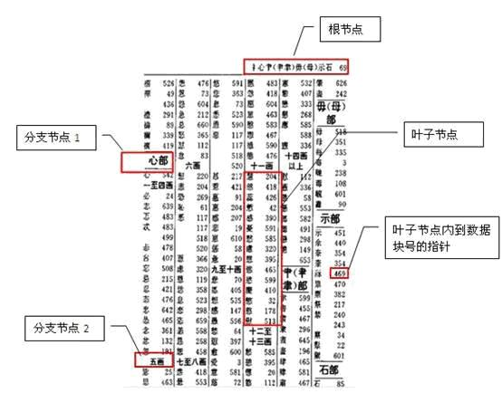

B树在数据库索引中的应用剖析（原稿）
引言
关于数据库索引，随便Google一个Oracle index，Mysql index总有大量的结果出来，其中不乏某某索引之n条经典建议。笔者认为，较之借鉴，在搞清楚了自己的需求的基础上，对备选方案的原理有个尽可能深入全面的了解会更有利于我们的选择和决策。因为某种方案或者技术呈现出某种优势（包括可能没有被介绍到但一定存在的限制），不是定义出来的，而是因为其实现机制决定的。就像LinkedList和ArrayList分别适用于什么应用不是Document里面定义的，是由其本身的结构决定的。数据库的索引也是一样，不是厂商的白皮书这样规定，而是其原理决定的。 本文只是重点介绍数据结构中经典的树（B树）结构在数据库索引中的经典应用，也会涉及到几种数据库中对此支持的细微不同，以期比较完整的描述实现原理。最终会发现这几种被不同数据库厂商冠以不同名字东西原理上其实差不多，理论上其实是一个东西。文中只是略微空洞的介绍其实现原理，不涉及应用上具体的使用建议。
#####关键字：B树 数据库索引? 索引组织表（Index-Organized Tables） 聚集索引 非聚集索引 Oracle ?Mysql Mssql
一、关于数据库索引
数据库索引在维基中的定义：A database index is a data structure that improves the speed of data retrieval operations on a database table at the cost of additional writes and the use of more storage space to maintain the extra copy of data. Indexes are used to quickly locate data without having to search every row in a database table every time a database table is accessed. Indexes can be created using one or more columns of a database table, providing the basis for both rapid random lookups and efficient access of ordered records.

这个定义看上去挺长，简单讲就是为了对一个相对较大的数据结构访问快速方便，另外的存储了一个小的数据结构，依照待检索属性进行排序并且记录了该属性的记录在大的数据结构中的位置，以便快速的在大的数据结构中检索定位。如果Index被翻译成目录可能更能体现出其本质的作用。和其他很多计算机科学中的概念一样，Index也是现实事物中的一种常见结构。由目录最容易联想到的是图书馆的书籍管理，如果没有个目录，很难想象要从图书馆的那么多书架上找到一本书是多么困难的事情。

当然映射的最好的是小时候厚厚的新华字典前面的目录，一般好像有两种，一种是拼音的，一种是笔画还是所谓的四角号码的。就是对于字典中数据根据两种不同属性不同进行索引。字典前面和后面多出来的那么几十页纸（额外的存储）的用处就是帮助检索者快速定位到字典中某个词条的完整记录。如果没有这个Index，要查找字典的某个字就只有来挨着翻页了(对应数据库索引的全表扫描full table scan)。

（写完上文想着配个图，在google图片搜图片的时候搜到了这篇文章 ，直接摘录了，并为作者点个赞。我只是想做个数据库索引和字典索引的类别，作者居然做到了和B树索引的类别！）
二、关于B树索引
数据库中比较常用的索引结构有B树、位图等几种。其中B树是几乎所有数据库的默认索引结构，也是用的最多的索引结构。 索引的基本作用是用于查找。数据结构的查找算法中最基本的是顺序查找，即从列表上逐个匹配关键字，其时间复杂度是O(n)，当n比较大的时候这个效率是不能承受的。于是计算机科学尝试能不能在存储上做些文章发明效率更高的算法，然后就有了数据结构中我们熟悉的基于排序树的查找。B树（其实是B+树）是一种树的结构，通常用于数据库和操作系统的文件系统中。特点是能够保持数据稳定有序，其插入与修改拥有较稳定的对数时间复杂度。B+树的创造者Rudolf Bayer没有解释B代表什么。最常见的观点是B代表平衡(balanced)，因为所有的叶子节点在树中都在相同的级别上，B也可能代表Bayer，或者是波音（Boeing），因为他曾经工作于波音科学研究实验室。下图是一件简单的B树的例子。

A simple B+ tree example linking the keys 1–7 to data values d1-d7. The linked list (red) allows rapid in-order traversal
B树是一棵平衡树，采用树的结构是因为其O(logN)的查找复杂度，而平衡树是计算机科学中改进的二叉查找树。对一棵查找树（search tree）进行查询/新增/删除等动作,所花的时间与树的高度h成比例,并不与树的容量n成比例。在B树上不管查找成功与否，每次查找都是走了一条从根到叶子结点的路径。一个度为d的B树，设节点为数N，则其树高h的上限为logd((N+1)/2)，检索一个值，其查找节点个数的时间复杂度为O(logdN)。这样使得在B树中检索一个节点最多需要h个节点，而数据库系统中一般将一个节点的大小设定为一个页，每个节点一次IO。使B树的根节点常驻内存，则一次检索最多需要h-1次的I/O即可。关于数据结构中的树，二叉树、平衡树的结构，遍历方式、节点查找方式、节点的删除、添加等都是很典型的内容，不在此做介绍。B树检索的伪代码如下：
Function: search (k)
return tree_search (k, root);
Function: tree_search (k, node)
if node is a leaf then
return node;
switch k do
case k < k_0
return tree_search(k, p_0);
case k_i ≤ k < k_{i+1}
return tree_search(k, p_{i+1});
case k_d ≤ k
return tree_search(k, p_{d+1});
关于B树的一个性质，在集中数据库中采用的B树结构的索引，除了上面平衡树的公共特征外，结合数据库索引使用的需要，都有如下的结构要求。
-
内节点不存储data，只存储key和指向下级节点的指针；叶子节点不存储指针，存储真正的数据 (Oracle 中分别称为branch blocks 和 leaf blocks ；Mssql中称为intermediate level nodes和leaf nodes)。即内节点的作用是导航，叶子节点才真正存数据data。不同的索引类型，叶节点这个data域存储的东西会有不同，导致查询也会不同。在后面会对此详细介绍。
-
在叶子节点上都会有个双向的指针指向相邻的叶子节点。提高在索引键上的区间访问的性能。
通常在B树上有两个头指针，一个指向根节点，另一个指向关键字最小的叶子节点。因此可以对B树进行两种查找运算：一种是从最小关键字起顺序查找，另一种是从根节点开始，进行随机查找。
三、B树在数据库索引中的几种应用
结合数据库实现对B树结构的不同应用，主要是叶子节点存储的内容不同，我把B树其为两种：一种是叶节点存完整的行数据，一种是叶节点只是存一个指向实际数据行的指针。根据表中数据存储格式不同，指针又分为物理指针和逻辑指针。这样B树的结构被分成了三类：
- B树叶节点存完整数据的索引结构
- B树叶节点存物理指针的索引结构
- B树叶节点存逻辑指针的索引结构
因为几种数据库各自对这几种特征的索引的术语不同，暂且这样统一命名，虽然听着都不高大上。为了讨论方便，且这样分了。
(一) B树叶节点存物理指针的索引结构
这是最普通的一种索引结构。数据插入时存储位置是随机的，主要是数据库内部存储的空闲情况决定。这种表数据的存储结构称为堆表（heap table）（本来heap这个概念就是生成时候分配空间的）。在堆表（heap table）中记录是无序的，插入速度会比较快。但是查找一个数据会比较麻烦，需要扫描整个堆表才可以。如下图表T是示意的一个简单表，表上有三列。前面的十六进制数字仅仅是示意这一行的存储位置。

想想我们需要在表中找出C2=43的行，我们需要从第一行开始，逐行的检查每一行上C2的取值。直到找到第三行找到了。但还是需要扫描接下来的行，因为你不能保证在你扫描的前方还有没有另外一个或者多个C2=43的行存在。即要进行全表的扫描，查找一条记录的时间复杂度是O(N)，N为记录行数。对一个数据量比较大的表，这样的方式几乎是不可以接受的。 于是乎就有了索引的概念，即另外开辟一个存储结构，按照某个列进行排序，并记录每行的在该列上取值的以及该行在表中的对应位置。这恐怕是索引本质的意思了吧。回到我们字典的类比上，想我们的字典能根据目录某个笔画找到那个词条，靠的是在目录中存的页码这样一个指针。 因为前面提到的B树的优点，几乎所有的这类索引都采用B树结构。在叶节点上，叶节点的key是索引列在每行上的值，而对应的data域保存了该行的一个引用，也可以理解为指向实际存储数据的指针。如图中在C2上建立索引，记录按照C2的属性构建B树，在每个叶节点上和索引键对应的都有一个指针记录该行数据的存储位置。尽管右下角的表上的数据是无序的。同样要找到C2=43的记录行，从索引树上只要经过三个节点即可以找到叶节点存储的指针，并通过指针找到对应的行。

因为几种数据库中最典型的索引，结构也就基本相同。Oracle 中直接根据存储结构把这种索引称为B树索引，索引叶节点存储(key: rowid)，其中rowid标识了该行的物理存储位置。
引用来自Oracle ?Database Concepts 对B-Tree Indexes的描述：
The leaf blocks contain every indexed data value and a corresponding rowid used to locate the actual row. Each entry is sorted by (key, rowid). Within a leaf block, a key and rowid is linked to its left and right sibling entries. The leaf blocks themselves are also doubly linked.
对于Mssql来说，这种索引称为非聚集索引。当没有创建聚集索引的时候，即表示表是以堆的形式(heap structure)存储。同样叶节点也是存储（key: RID），其中RID指定数据存储物理位置的行和页。 引用[msdn.microsoft中Nonclustered Index Structures]的描述:
If the table is a heap, which means it does not have a clustered index, the row locator is a pointer to the row. The pointer is built from the file identifier (ID), page number, and number of the row on the page. The whole pointer is known as a Row ID (RID).
在Mysql 中索引结构和表的存储方式都是和存储引擎相关，不同的存储引擎实现不同。两种比较常用的存储引擎中,Myisam表上的数据总是按照堆的结果存储的，在Myisam上的索引也都是采用和上图类似的索引结构。详细点说Myisam上的主键索引、唯一索引、辅助索引都是这种结构。不同的是，主键索引要求选择的索引列是表的主键，唯一索引要求索引列取值的唯一性约束，而辅助索引没有这些要求。
(二)B树叶节点存数据的索引结构
B树构造的另外一种索引，与其说是一种索引方式，倒不如说是以一种表数据的存储方式（Oracle 中就称之为索引组织表（Index-Organized Tables））。这中结构的一个特点是B树的叶节点中和索引键对应存储的是实际的数据行。即（Key: Row）的结构。即在叶节点上完整的保存了数据行。如图，在C3上构建索引，则整个表中的数据按照C3的顺序来存储。第一个叶节点上存储了C3=5和C3=25的完整的行，同时整个表按照C3取值的顺序存储。即整个表的数据按照C3列在聚集（难怪在Mssql中这种结构被称为聚集索引呢）。

在Oracle 中，并不认为该种方式的存储是索引，而是更形象的称为索引组织表（Index-Organized Tables）；在Mssql中，这种结构正是其所谓的聚集索引（Clustered Index）；在Mysql 中，因为索引属于存储引擎级别的概念，在常用的Innodb和Myisam存储引擎中，只有Innodb是支持这种结构的，称之为（clustered index）。即便三种数据库分别支持这种索引结构，其相互之间还是有些比较tricky的差别，这正是想对照着强调的。 在Oracle 的索引组织表（Index-Organized Tables）根据主键排序后的顺序进行排列的，即索引的列必须是表的主键列，在建表的同时要指定主键约束，可以是单字段主键，也可以是复合主键约束。创建索引组织表时，必须要设定主键，否则报错。
引用来自Oracle ?Database Concepts 对Index-Organized Tables的描述：
An index-organized table is a table stored in a variation of a B-tree index structure. In a heap-organized table, rows are inserted where they fit. In an index-organized table, rows are stored in an index defined on the primary key for the table. Each index entry in the B-tree also stores the non-key column values.
在Mysql的Innodb的存储引擎中，Innodb的数据文件本身要按主键聚集，按主键顺序存储。所以Innodb要求表必须有主键，如果没有显式指定，Mysql系统会自动选择一个可以唯一标识数据记录的列作为主键，如果不存在这种列，则Mysql自动为Innodb表生成一个隐含字段作为主键，这个字段长度为6个字节，类型为长整形。 引用来自Mysql Manual关于clustered index的描述:
- If you define a PRIMARY KEY on your table, Innodb uses it as the clustered index.
- If you do not define a PRIMARY KEY for your table, Mysql picks the first UNIQUE index that has only NOT NULLcolumns as the primary key and Innodb uses it as the clustered index.
- If the table has no PRIMARY KEY or suitable UNIQUE index, Innodb internally generates a hidden clustered index on a synthetic column containing row ID values. The rows are ordered by the ID that Innodb assigns to the rows in such a table. The row ID is a 6-byte field that increases monotonically as new rows are inserted. Thus, the rows ordered by the row ID are physically in insertion order.
而在Mssql中，关于该索引列的要求就没有那么高，并未要求改索引列必须是主键，也不要求该列上必须有唯一性约束。如果表上没有建聚集索引，当在表上创建主键的时候，Mssql会自动在该主键列上创建一个聚集索引。当在没有唯一约束的列上创建聚集索引是，Mssql会自动的在重复的键值上添加一个4 byte的uniqueifier使得该值唯一，这个对用户是透明的。
来自technet.microsoft 的Create Clustered Indexes :
When you create a PRIMARY KEY constraint, a unique clustered index on the column or columns is automatically created if a clustered index on the table does not already exist and you do not specify a unique nonclustered index. The primary key column cannot allow NULL values.
(三) B树叶节点存逻辑指针的索引结构
根据前面的描述，当表中数据按照传统堆结构组织的时候，构造索引（非聚集）的B树的叶节点上上存储（key: rowid）这样的结构，即关联到数据行的物理指针。但当数据本身是按照B树存储的时候，数据库认为有了逻辑标识一个行的标签，叶节点存储的对指针会稍有不同。不在存储一个物理指针，而是存储该逻辑指针。即叶节点上存储（key: clusterKey）这样的结构，即关联到对应的聚集索引键，聚集索引键扮演了一个逻辑指针。如图，前面在C3上创建了聚集索引，C1上创建一个非聚集的索引。则在C1构造的索引树上叶节点处存储了每行C3取值作为聚集索引的键。如第三个叶子节点，C1对应的值为Inter，而对应的聚集索引在该行的值为C3=151.即通过151这个cluster key来关联到实际数据行。因为在C3上创建了聚集索引，数据行在另外一个按C3列构造的B树上存储。
 因为几种数据库对于聚集索引的要求有细微差别，在存在聚集索引情况下的非聚集索引也相应的有所不同。在Oracle 中，该索引称为辅助索引（Secondary Indexes on Index-Organized Tables）。因为Oracle 的索引组织表（Index-Organized Tables）的索引键必须是主键，则该辅助索引相应管理的是一个代表了主键的逻辑rowid。
引用Oracle Database Concepts的描述:
因为几种数据库对于聚集索引的要求有细微差别，在存在聚集索引情况下的非聚集索引也相应的有所不同。在Oracle 中，该索引称为辅助索引（Secondary Indexes on Index-Organized Tables）。因为Oracle 的索引组织表（Index-Organized Tables）的索引键必须是主键，则该辅助索引相应管理的是一个代表了主键的逻辑rowid。
引用Oracle Database Concepts的描述:
As explained in “Rowid Data Types”, Oracle ?Database uses row identifiers called logical rowids for index-organized tables. A logical rowid is a base64-encoded representation of the table primary key. The logical rowid length depends on the primary key length.
在Mysql的Innodb中，和Oracle 几乎完全相同，这种索引也称为辅助索引（secondary indexes）。因为其聚集索引列也是要求必须是主键，相应辅助索引关联的也是对应的主键。
引用Mysql Manual关于clustered index的描述:
All indexes other than the clustered index are known as secondary indexes. In Innodb, each record in a secondary index contains the primary key columns for the row, as well as the columns specified for the secondary index. Innodb uses this primary key value to search for the row in the clustered index.
在Mssql中，这种索引称为非聚集索引(Nonclustered Index)。在B树的页节点上存储索引列和聚集索引对应聚集索引键（clustered index key）。上面讨论聚集索引的时候说到过，Mssql的聚集索引的列不要求唯一性，也不要求是主键。但是为了非聚集索引能通过聚集索引键唯一定位到一行数据，在重复的聚集索引键上会添加一个唯一标示来使得其唯一，这个操作对用户是透明的。

如上图在C3上有重复的值，按照Mysql和Oracle 的要求，在该列上是不能创建聚集索引的，但是在Mssql中，在该列上可以建聚集索引。图示在C1列上的非聚集索引和C3列有重复值的聚集索引的情况下，C1上创建的非聚集索引的每一行数据都能通过聚集索引key唯一关联到实际的数据行上。

来自msdn的no-clustered index
If the table has a clustered index, or the index is on an indexed view, the row locator is the clustered index key for the row. If the clustered index is not a unique index, SQL Server makes any duplicate keys unique by adding an internally generated value called a uniqueifier. This four-byte value is not visible to users. It is only added when required to make the clustered key unique for use in nonclustered indexes. SQL Server retrieves the data row by searching the clustered index using the clustered index key stored in the leaf row of the nonclustered index.
四、总结
为了更清晰的对照，整理出一个对照列表。发现大部分都是相同的，除了术语上，SQL语法上，或者某些约定限制的程度上。因为原理是一样的。同样因为结构相同，造成使用也是完全相同。如：
- 根据聚集索引的检索方式；
- 有聚集索引时根据非聚集索引检索方式；
- 没有聚集索引时根据非聚集索引检索方式
| 数据库(存储引擎)/项目 | Oracle | Mssql | Mysql(Innodb) | Mysql(Myisam) | |
|---|---|---|---|---|---|
| 表数据B树结构存储（即创建了聚集索引） | 支持表数据B树存储 | 支持 | 支持 | 支持 | 不支持 |
| 术语 | 索引组织表（Index-Organized Tables） | 聚集索引**Clustered Indexes** | 聚集索引(主键索引) Clustered Index | 不支持 | |
| 聚集索引键要求 | 必须是主键 | 没有主键要求，也没有唯一性要求 | 必须是主键 | 不支持 | |
| B树叶节点结构 | **(Key: ROW)**索引key和整行数据 | **(Key: ROW)**索引key和整行数据 | **(Key: ROW)**索引key和整行数据 | 不支持 | |
| 根据聚集索引访问数据行 | 聚集索引上检索聚集索引键，找到索引叶节点即访问到整行数据 | 聚集索引上检索聚集索引键，找到索引叶节点即访问到整行数据 | 聚集索引上检索聚集索引键，找到索引叶节点即访问到整行数据 | 不支持 | |
| 索引（非聚集）名称 | 辅助索引 | 非聚集索引 | 辅助索引 | 不支持 | |
| 索引（非聚集）B树叶节点结构 | (Key**：ClusterKey)**索引（非聚集）键和聚集索引键的对应关系。 | (Key**：ClusterKey)**索引（非聚集）键和，聚集索引键的对应关系。 | (Key**：ClusterKey)**索引（非聚集）键和，聚集索引键的对应关系。 | 不支持 | |
| 根据索引（非聚集）访问数据行 | 二次检索：1.检索索引（非聚集），定位到索引行所在叶节点，得到索引键对应的聚集索引键；2.在聚集索引上检索聚集索引键，即访问到数据行。 | 二次检索：1.检索索引（非聚集），定位到索引行所在叶节点，得到索引键对应的聚集索引键；2.在聚集索引上检索聚集索引键，即访问到数据行。 | 二次检索：1.检索索引（非聚集），定位到索引行所在叶节点，得到索引键对应的聚集索引键；2.在聚集索引上检索聚集索引键，即访问到数据行。 | 不支持 | |
| 表数据堆存储方式heap structure （聚集索引不存在) | 索引（非聚集）名称 | B树索引 | 非聚集索引 | 不支持 | 主键索引、唯一索引、辅助索引 |
| 索引（非聚集）B树叶节点结构 | (Key**：ROWID)** 索引（非聚集）键和行存储物理位置 | (Key**：ROWID)** 索引（非聚集）键和行存储物理位置 | 不支持 | (Key**：ROWID)** 索引（非聚集）键和行存储物理位置 | |
| 根据索引（非聚集）访问数据行 | 1.从索引（非聚集）定位到索引行所在叶节点，即得到数据行的物理存储位置；2.直接根据物理存储位置从堆上访问数据行。 | 1.从索引（非聚集）定位到索引行所在叶节点，即得到数据行的物理存储位置；2.直接根据物理存储位置从堆上访问数据行。 | 不支持 | 1.从索引（非聚集）定位到索引行所在叶节点，即得到数据行的物理存储位置；2.直接根据物理存储位置从堆上访问数据行。 |
再根据原理多分析一点，不是使用建议，只是这种结构提示给我们的信息。只说it is ,不说you should。
如知道了聚集索引实现原理后，应该能理解为什么不大建议在长字段上面建聚集索引，因为所有辅助索引都引用主索引，过长的主索引会令辅助索引变得过大；也能理为什么说在聚集索引列上的查找，包括范围查找会比较高效，因为聚集索引按照某个列在组织；也能理解建了聚集索引后写入性能会怎样降低，因为数据组织有了约束，写入性能下降，插入/删除/更新聚集键值等，会导致记录的物理移动、页拆分等额外的磁盘操作；也不难理解非聚集的索引读数据时候，如果不能从索引上包含全部的查询列，需要关联表来查询，则会有两次查询，一次是从非聚集索引上定位到聚集索引键，然后再从聚集索引键查到数据。
较之非聚集的索引，数据存储方式只有一种，聚集索引也就只能有一个，也就显得相对珍贵些。一般选择会要比较慎重些。知道了这些原理后，对于到底要不要建聚集索引，根据业务特征在哪个列上创建，要不要创建非聚集索引，在哪个上创建。这些也就不难回答。
当然即使理解了原理，在使用中参考使用场景的实验结果更能帮助我们做出满足要求的选择。有点像我们测试中的黑盒测试之于白盒测试的关系。
同样对于其他数据库方面的技术，通过Database System Concepts 中数据库一般理论的稍微抽象的观点了解、看待其在我们开发中的应用，可以使我们对这些技术的理解更系统，更深刻。当项目需要游走于多个数据库之间的时候，不至于都是拿着manual，拿着tuning的手册来完全的从零开始被指导。